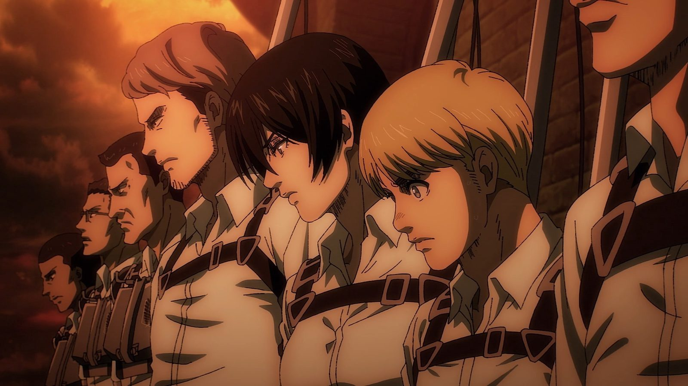
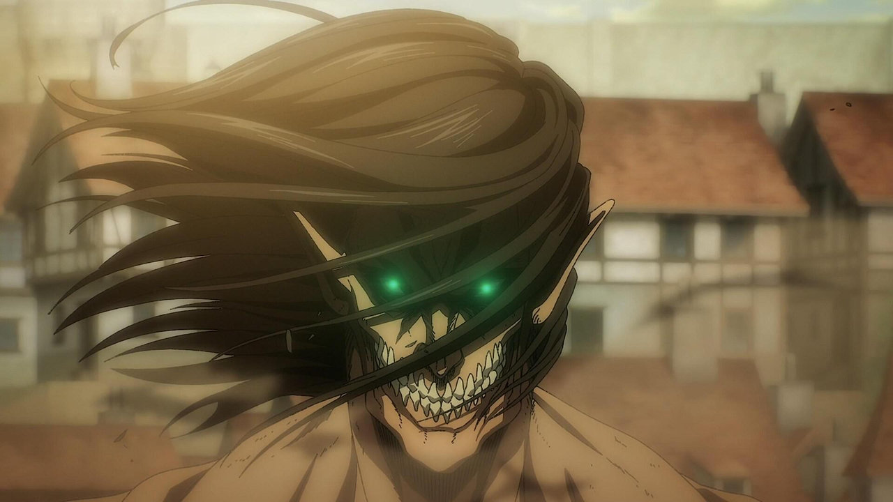
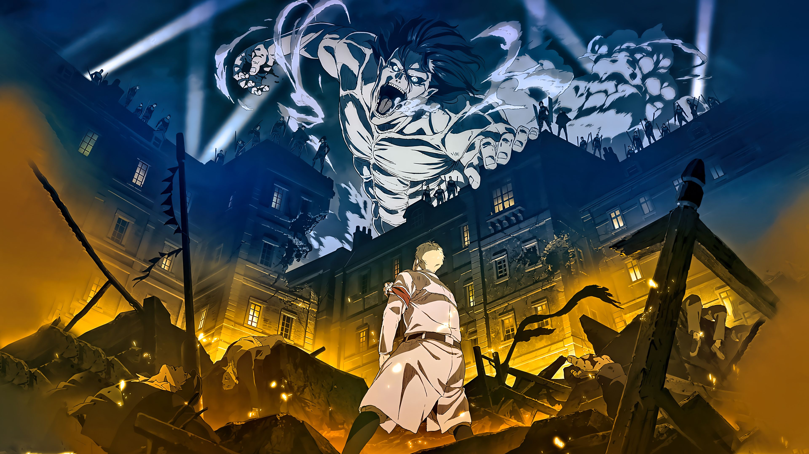
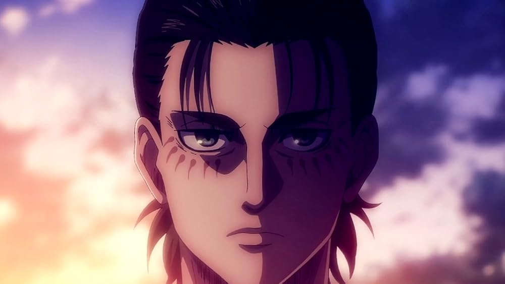
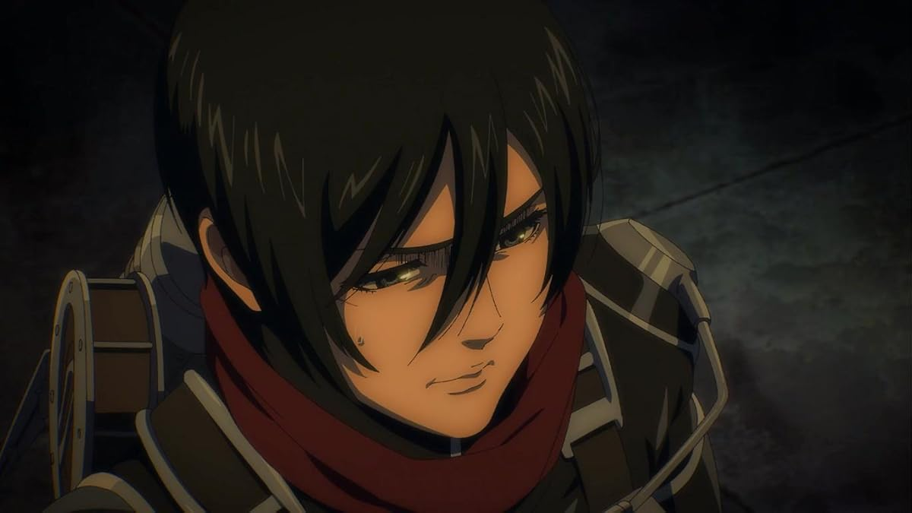
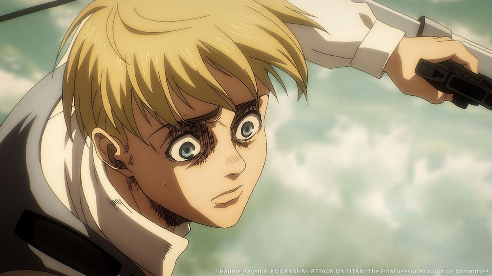

Аниме — это не жанр мультипликации, а целый вид повествовательного искусства со своими особенностями. Как литература, кино или видеоигры. И «Атака титанов» — яркий представитель этого вида искусства. Это военная драма, ничуть не уступающая в изображении бессмысленности и кровожадности войны таким культовым фильмам, как «Тонкая красная линия» (о нём мы рассказывали в подборке фильмов про войну), и другой классике кинематографа.

Формально «Атака титанов» — сёнэн, то есть аниме для мальчиков-подростков. И начинается сериал как типичный сёнэн. Мать главного героя Эрена Йегера убивают зловещие титаны, проникшие в город. Эрен клянётся отомстить и усердно тренируется, доказывая окружающим и себе самому, что сможет добиться цели. Но потом раз за разом терпит крах, что делает этот сериал совсем не подростковым.
В «Атаке титанов» злодеи не произносят пафосных речей, трусость не считается пороком, грань между добром и злом размыта, а самонадеянность и излишняя вера в свои силы часто ведут к провалу и смерти.
Так что если до этого момента вы натыкались лишь на аниме-сериалы с романтическим флёром — забудьте. «Атака титанов» совсем не про это. Это серьёзное произведение и мощное антивоенное высказывание.
Сюжет «Атаки титанов» рассказывает о людях, укрывшихся за высоченными стенами, которые служат им защитой от кровожадных исполинов. Разведкорпус регулярно докладывает о титанах и терпит потери, но простой люд этим особо не озабочен и уверен, что всё под контролем.
Однако кошмар однажды случается: стену ломает гигант и через дыру в город устремляются чудовища. Они выглядят как голые люди с искажёнными то ли радостью, то ли болью лицами. Двигаются чудища как-то неестественно. Но главный ужас в том, что они здесь для того, чтобы убивать.

В основном титаны ходят медленно, но отдельные особи довольно проворно бегают и отлично прыгают в длину. Убить их можно только меткой атакой сзади в шею. Их повадки и неестественные движения выглядят забавно до тех пор, пока один из них не откусывает человеку голову. Так «мультик» превращается в жуткий хоррор.
Мало какое аниме сравнится с «Атакой титанов» по градусу экшена. Людям есть что противопоставить кровожадным исполинам: армия использует особые устройства пространственного маневрирования с тросами, позволяющими цепляться за здания или деревья. Так что любая битва в городе или лесу — это яростный и динамичный экшен, в котором герои летают от одной точки на возвышенности к другой и молотят титанов лезвиями.
Самый первый опенинг сериала, в котором можно краешком увидеть, насколько яркий в аниме экшен.
Поражает и скрупулёзность планов армейских подразделений людей. Каждый шаг в противостоянии врагу здесь, как правило, продуман и логичен. И чем сильнее закручивается сюжет, тем остроумнее становится тактика людей.
Когда на оркестровых концертах звучит трек Shinzou wo Sasageyo!, зал встаёт и прижимает кулак к сердцу. Это жест корпуса разведчиков в «Атаке титанов», и вот настолько это аниме западает в душу. В феноменальности «Атаки титанов» сомневаться не приходится, и надеемся, что нам удалось убедить вас в этом.




| Сезон | Количество серий |
| 1 сезон | 25 серий |
| 2 сезон | 12 серий |
| 3 сезон | 22 серии |
| 4 сезон | 30 серий |